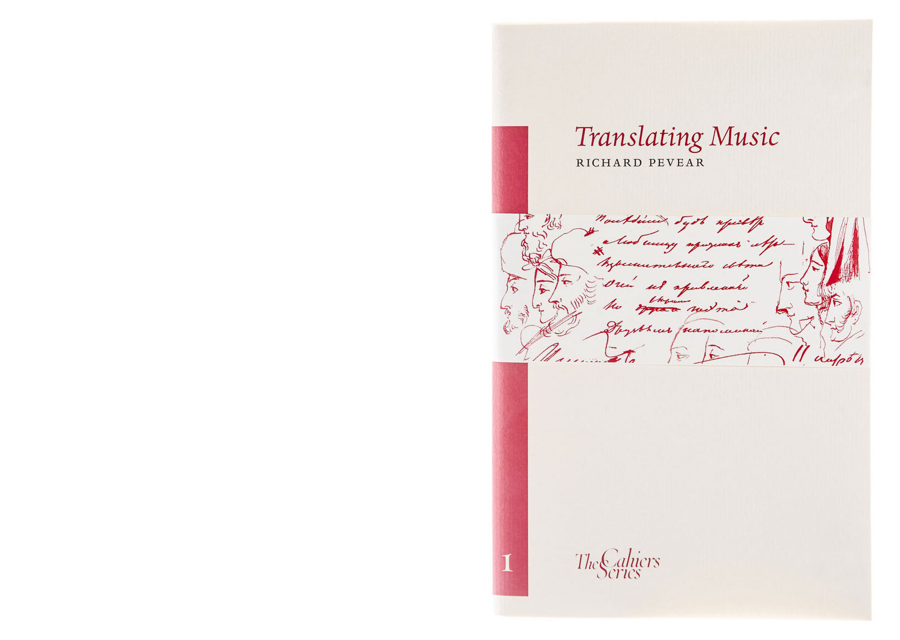

cahierseries1 36 pages, 5 monochrome illustrations | 240 x 150mm | Sewn paperback with dust jacket | ISBN 978-0-9552963-1-4 £12 Cahier 01 Translating Music Richard Pevear The first volume in the series is by one of the most renowned contemporary translators into English. He discusses his recent experience of translating Tolstoy’s War and Peace, and offers alongside his illuminating essay a wonderful rendition of Pushkin’s long poem The Tale of the Preacher and His Man Bumpkin. The poem is printed in Russian and English and is accompanied by drawings by Pushkin himself.